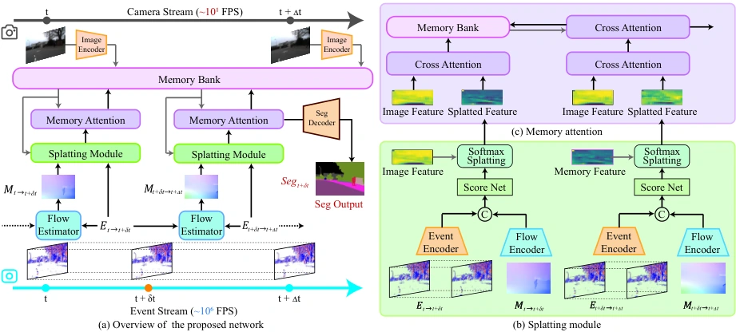
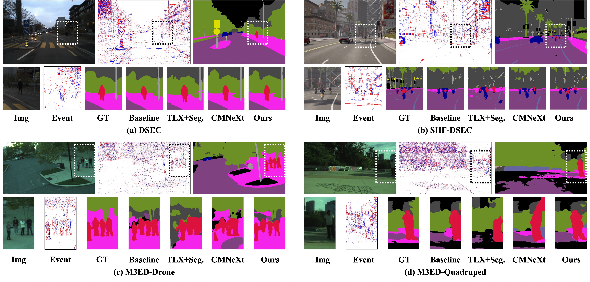

Overview
LiFR-Seg predicts interframe semantic maps from one past RGB frame and observed events. It transports semantic features using event-derived motion and learned confidence, then uses temporal memory to refine them. No future RGB frame is required at inference.
Method
Move the features, not just the pixels.
01
Anchor
Extract semantic features from the RGB keyframe.
02
Propagate
Use event motion and confidence to transport features.
03
Refine
Retrieve temporal context before decoding the semantic map.


Results
Which representation should move?
| Approach | mIoU |
|---|---|
| Image interpolation | 70.38 |
| Image warping | 72.37 |
| Segmentation warping | 71.63 |
| Feature warping · LiFR-Seg | 73.82 |
DSEC, 50 ms query offset. Table 4, mIoU (%). Higher is better. The paper separately reports a target-RGB reference of 73.91% versus 73.82% for LiFR-Seg.
Read the experimental protocol ↗

BibTeX
@inproceedings{wu2026lifrseg,
title = {LiFR-Seg: Anytime High-Frame-Rate Segmentation via Event-Guided Propagation},
author = {Xiaoshan Wu and Xiaoyang Lyu and Yifei Yu and Bo Wang and Zhongrui Wang and Xiaojuan Qi},
booktitle = {International Conference on Learning Representations},
year = {2026},
url = {https://arxiv.org/abs/2603.21115}
}